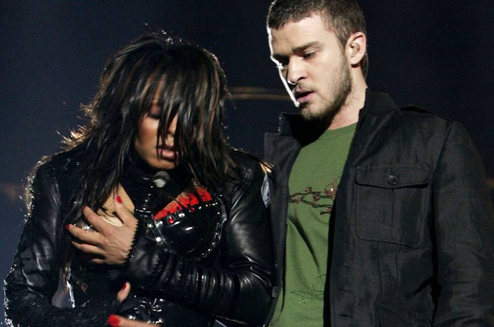
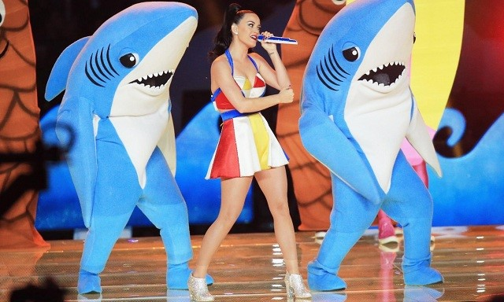
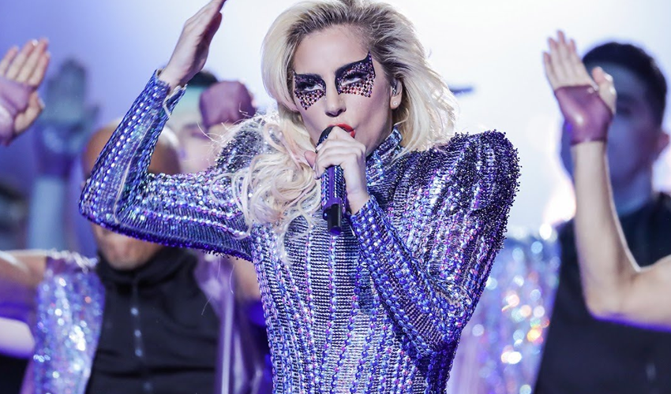
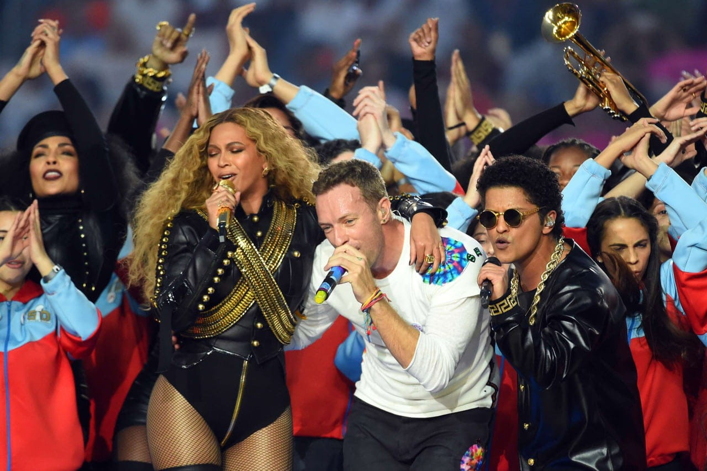
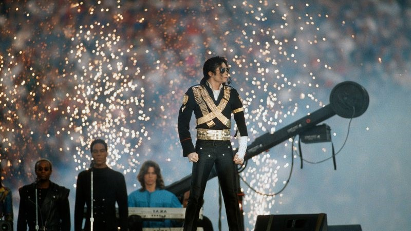
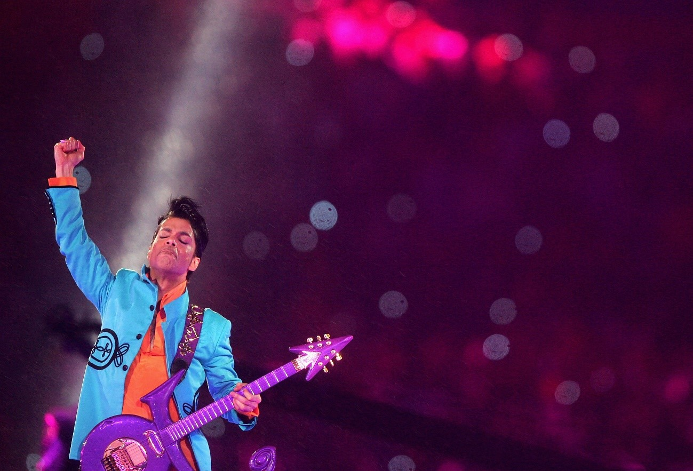

Janet Jackson e Justin Timberlake
O acidente do figurino de Janet Jackson No Super Bowl 2004, Janet Jackson e Justin Timberlake fizeram um dueto, mas uma coisa deu errado. Justin Timberlake rasgou um pedaço da roupa da cantora, deixando um de seus seios à mostra. O incidente causou alvoroço e a rede de TV que exibiu a cena foi multada. A produção alegou que aquilo não havia sido ensaiado e que teria mesmo sido um acidente, já que Justin deveria tirar apenas o top da cantora para revelar um sutiã vermelho, mas acabou tirando tudo. Foi um escândalo na época, e para se ter uma ideia, a cantora enfrentou dificuldades para reerguer sua carreira, que foi abalada com o ocorrido.
Katy Perry
Katy Perry e o tubarão dançarino Katy Perry trouxe todo o seu lado colorido e músicas animadoras para o Super Bowl 2015, que foi o mais visto da história do evento. Mas quem roubou a cena mesmo foram os dançarinos vestidos de tubarão, especialmente o da esquerda, que ficou conhecido como Left Shark. O tubarãozinho fofo é um dos maiores memes surgidos nos últimos anos de Super Bowl!
Lady Gaga
Lady Gaga desceu fazendo acrobacias, carregada por cabos, até o palco no centro do gramado em seu show no Super Bowl, em 2017.
Drones foram usados para iluminar o céu com as cores da bandeira dos Estados Unidos.
Beyoncé, Coldplay e Bruno Mars
O Super Bowl 50 teve um combo de estrelas. A banda Coldplay recebeu a companhia de Beyoncé e Bruno Mars no show do intervalo.
Como você verá nesta lista, a cantora e o cantor também merecem menção especial pelas performances que fizeram quando lideraram as apresentações de outras edições.
Michael Jackson
Michael Jackson inaugurou a era dos grandes shows no intervalo do Super Bowl. Em 1993, ele se encerrou sua apresentação com mais de 3.500 crianças no palco.
Michael Jackson fez um dos shows mais marcantes do Super Bowl. E ele começou a impressionar já com sua chegada. Michael surgiu do chão com uma explosão e ficou quase dois minutos em silêncio total, paradinho no palco, enquanto a câmera girava ao seu redor. A cena ficou ainda mais emocionante porque só era possível ouvir os gritos e aplausos da plateia.
Prince
Prince e sua guitarra entraram para a história como uma das performances mais sensacionais de todos os tempos no show do intervalo do Super Bowl. Ele fez o público esquecer a chuva durante a apresentação que foi de We Will Rock You a Purple Rain.
Prince fez um show de arrepiar no Super Bowl, mas foi no momento de Purple Rain que tivemos um momento icônico. Com chuva caindo e o cantor tocando sua guitarra roxa, a cena se tornou inesquecível!
